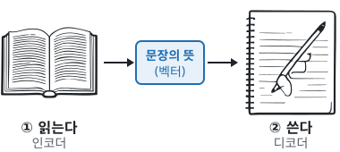
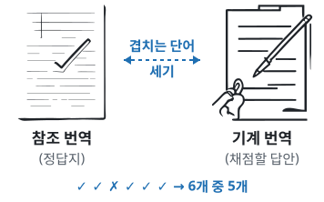

어텐션만으로 만든 번역 모델, 트랜스포머
Attention Is All You Need
순환과 합성곱 없이 어텐션만으로 시퀀스를 변환하는 구조의 원리와 번역 성능을 익힌다
이 논문은 순환 신경망과 합성곱 신경망을 쓰지 않고 어텐션만으로 구성한 트랜스포머를 제안한다. 트랜스포머는 병렬화가 쉬워 학습 시간이 짧다. WMT 2014 영어-독일어 번역에서 28.4 BLEU, 영어-프랑스어 번역에서 41.8 BLEU를 기록하였다.
서론과 배경
트랜스포머 논문을 읽기 전에 필요한 네 가지 개념을 정리한다
이 논문을 쓴 이유와 새로운 점논문 1절
기존 번역 모델은 순환 신경망으로 단어를 하나씩 차례로 읽었다. 앞 단계가 끝나야 다음 단계를 계산할 수 있어 학습을 나누어 동시에 처리하기 어렵고, 멀리 떨어진 단어를 이으려면 여러 단계를 거쳐야 했다. 이 논문은 이 순서 의존을 없애려고 쓰였다.
그림은 두 방식이 입력 문장 $x_1, \ldots, x_4$를 처리하는 과정을 나타낸 것이다.
- 어텐션만으로 구성: 순환과 합성곱을 모두 빼고 어텐션만으로 인코더와 디코더를 만든 첫 번역 모델이다.
- 병렬 학습: 모든 위치를 한 단계로 이어 학습을 동시에 처리하므로 기본 모델은 GPU 8개로 12시간 만에 학습된다.
- 최고 성능: WMT 2014 영어-독일어 번역에서 BLEU 28.4로 앙상블(ensemble)을 포함한 기존 최고 기록을 넘었다.
이 논문은 순환 신경망의 순서 의존을 없애려고 어텐션만으로 번역 모델을 만들었다.
벡터와 내적
문장 속 단어는 숫자 여러 개로 이루어진 벡터(vector)로 표현된다. 두 벡터가 같은 방향을 가리킬수록 내적(dot product)이 크다.
그림은 쿼리 $\boldsymbol{q}=(2,1)$과 세 키 벡터를 좌표평면에 나타낸 것이다. 괄호 안의 수는 $\boldsymbol{q}$와의 내적이다. 같은 방향에 가까운 $\boldsymbol{k}_1$의 내적이 가장 크고, 반대 방향인 $\boldsymbol{k}_3$의 내적은 음수이다.
두 벡터 $\boldsymbol{q}$와 $\boldsymbol{k}$의 내적은 같은 위치의 성분끼리 곱하여 더한 값이다. 내적이 클수록 두 벡터가 비슷하다고 본다.
내적은 성분끼리 곱해 더한 값이며 두 벡터가 비슷한 방향일수록 크다.
개념 체크소프트맥스
소프트맥스(softmax)는 점수 여러 개를 합이 1인 비중으로 바꾸는 함수이다. 앞에서 구한 내적 2, 1, $-2$에 적용하면 비중은 약 0.72, 0.27, 0.01이 된다.
여기서 $x_i$는 $i$번째 점수이다. 점수 차이가 클수록 비중이 한쪽으로 쏠린다는 점이 뒤에서 중요해진다.
1다음 중 소프트맥스의 출력에 대한 설명으로 옳은 것은?
소프트맥스는 점수를 모두 양수이고 합이 1인 비중으로 바꾼다.
인코더-디코더와 순환 신경망
인코더(encoder)는 입력 문장을 벡터로 요약하고, 디코더(decoder)는 그 벡터에서 출력 문장을 만든다. 논문 이전에는 순환 신경망(recurrent neural network, RNN)이 이 두 부분을 맡는 것이 표준이었다.
그림처럼 번역은 원문을 읽어 뜻을 정리하는 일(①)과 그 뜻으로 새 문장을 쓰는 일(②)로 나뉜다. 인코더가 ①을, 디코더가 ②를 맡는다.

순환 신경망은 앞 단계의 계산이 끝나야 다음 단계를 시작할 수 있어서 한 문장 안에서 계산을 나누어 동시에 처리하기 어렵다. 이 논문은 이 제약을 없애는 것을 목표로 삼는다.
순환 신경망 기반 인코더-디코더는 토큰(token)을 순서대로 처리하므로 병렬화가 어렵다.
어텐션과 쿼리, 키, 값
어텐션(attention)은 필요한 정보를 가진 위치에 더 큰 비중을 두고 읽는 방식이다. 도서관에서 책을 찾는 과정에 비유하면 세 요소를 구분할 수 있다.
그림처럼 색인 카드에서 찾는 주제와 맞는 카드를 고르고, 그 카드가 가리키는 책을 꺼내 읽는다.
지금 찾고 있는 내용이다. 검색어에 해당한다.
각 책에 붙은 색인이다. 쿼리와 비교하여 얼마나 관련이 있는지 정한다.
책의 실제 내용이다. 관련도에 따라 섞어서 가져온다.
쿼리와 키의 내적으로 관련도를 구하고, 소프트맥스로 비중을 만든 뒤, 그 비중으로 값을 섞는다. 이 과정이 다음 모듈에서 식으로 정리된다.
어텐션은 쿼리와 키의 내적으로 비중을 정하고 그 비중으로 값을 섞어 가져온다.
탐구 자료지식 지도
그림은 선수 개념이 트랜스포머의 어텐션으로 이어지는 관계를 나타낸 것이다.
왼쪽의 세 상자는 배경 지식이고, 오른쪽 강조 상자는 논문의 주장이다.
내적, 소프트맥스, 순환 신경망의 한계가 어텐션만으로 구성한 트랜스포머로 이어진다.
탐구 자료연구 계보논문 2절
트랜스포머는 시퀀스 변환(sequence transduction) 모델과 어텐션의 흐름 위에 놓인다. 각 갈래의 오른쪽은 이어받은 것과 달라진 것이다. 노드를 누르면 연구 설명이 나온다.
어텐션을 순환 신경망의 보조 장치로 썼다. → 트랜스포머는 어텐션을 모델의 본체로 삼았다.
인코더-디코더 틀은 그대로 이어받았다. → 그 안의 순환 신경망을 셀프 어텐션 층으로 바꿨다.
합성곱으로 병렬화했지만 먼 위치를 잇는 연산 수가 거리에 비례해 늘었다. → 트랜스포머는 거리와 관계없이 한 단계로 잇는다.
트랜스포머는 앞선 연구의 어텐션과 인코더-디코더 틀을 이어받되, 순환과 합성곱 없이 어텐션만으로 구성한 점이 새롭다.
확인 문제내적과 순환 신경망
1다음 중 순환 신경망 기반 인코더-디코더 모델의 한계로 옳은 것은?
2쿼리 $(2, 1)$에 대해 키 $(1, 0)$과 키 $(0, 1)$의 비중을 비교한 결과로 옳은 것은?[3점]
순환 신경망은 병렬화가 어렵고, 쿼리와 키의 내적이 클수록 비중이 커진다.
확인 문제내적과 비중
3그림은 좌표평면 위에 쿼리 벡터 $\boldsymbol{q}$와 키 벡터 $\boldsymbol{k}_1$, $\boldsymbol{k}_2$를 나타낸 것이다. 모눈 한 칸의 길이는 1이다. 이에 대한 설명으로 옳지 않은 것은?
쿼리와 내적이 큰 키일수록 소프트맥스 비중이 크다.
어텐션
스케일드 내적 어텐션과 멀티헤드 어텐션의 계산 과정을 따라간다
스케일드 내적 어텐션논문 3.2.1절
각 위치는 다른 위치의 정보를 어떻게 가져올까? 트랜스포머의 핵심은 스케일드 내적 어텐션(scaled dot-product attention)이다. 각 위치가 쿼리를 던지고, 모든 위치의 키와 비교하여 얻은 비중으로 값을 섞는다.
그림은 길이 $n$인 문장에서 각 행렬의 크기를 나타낸 것이다. 점수 행렬 $S$와 비중 행렬 $W$는 $n \times n$이고, $W$의 한 행(색칠한 줄)은 한 쿼리가 모든 위치에 주는 비중으로 합이 1이다.
스케일드 내적 어텐션은 내적, 크기 조정, 소프트맥스, 값 섞기의 네 단계로 출력을 만든다.
탐구 자료수식 유도 단계별 풀이
어텐션 식을 한 단계씩 쌓아 올린다. 버튼을 눌러 다음 단계를 보시오.
어텐션의 출력은 쿼리와 키로 만든 비중을 값에 곱한 결과이다. 여기서 $Q$는 쿼리 행렬(matrix), $K$는 키 행렬, $V$는 값 행렬, $d_k$는 키 벡터의 차원(dimension)이다.
어텐션은 점수 행렬을 $\sqrt{d_k}$로 나누고 소프트맥스를 적용한 비중으로 값을 섞는다.
개념 체크크기 조정의 이유
각 성분이 평균 0, 분산 1인 독립 확률 변수이면 내적의 분산은 $d_k$이다. 점수를 $\sqrt{d_k}$로 나누면 분산이 다시 1이 된다.
그림은 $d_k=64$일 때 예시 점수를 나누지 않은 경우와 $\sqrt{d_k}=8$로 나눈 경우의 소프트맥스 비중을 나타낸 것이다. 나누지 않으면 비중이 첫째 위치에 0.998로 쏠린다.
1다음 중 내적을 나누지 않고 키 차원 $d_k$를 크게 할 때 나타날 결과로 가장 타당한 것은?
내적을 $\sqrt{d_k}$로 나누면 분산이 1로 돌아와 소프트맥스가 한 위치로 쏠리지 않는다.
탐구 자료의사코드 단계별 풀이
같은 계산을 줄 단위로 따라가 본다. 각 줄이 앞의 유도 단계와 어떻게 대응하는지 확인하시오.
입력은 쿼리, 키, 값 행렬과 키 차원이다.
모든 쿼리와 모든 키의 내적을 한꺼번에 구한다. 반복문 없이 행렬 곱 한 번으로 끝난다.
내적의 분산을 1로 되돌리려고 키 차원의 제곱근으로 나눈다.
각 쿼리의 점수 행을 하나씩 처리한다.
점수 행에 소프트맥스를 적용하여 합이 1인 비중을 만든다.
반복을 마친다.
비중 행렬을 값 행렬에 곱하여 출력을 얻는다. 비중이 큰 위치의 값이 더 많이 섞인다.
의사코드는 행렬 곱, 크기 조정, 행별 소프트맥스, 값과의 곱 순서로 어텐션을 계산한다.
멀티헤드 어텐션논문 3.2.2절
멀티헤드 어텐션(multi-head attention)은 어텐션을 한 번만 계산하지 않고 $h$개의 헤드로 나누어 계산한다. 각 헤드는 학습된 서로 다른 선형 변환으로 쿼리, 키, 값을 낮은 차원으로 옮긴 뒤 어텐션을 수행한다.
여기서 $W_i^Q$, $W_i^K$, $W_i^V$는 헤드 $i$의 투영 행렬이고 $W^O$는 이어 붙인 결과를 되돌리는 행렬이다. 모델 차원이 $d_{\mathit{model}}=512$이고 헤드가 $h=8$개이면 각 헤드의 차원은 $d_k = d_v = 512/8 = 64$이다.
그림의 ①에서 헤드마다 다른 행렬로 쿼리, 키, 값을 차원 64로 옮기고, ②에서 헤드 8개가 각자 스케일드 내적 어텐션을 동시에 계산한다. ③에서 헤드 8개의 출력을 이어 붙이면 차원 512가 되고 $W^O$를 곱해 최종 출력이 된다(색칠한 줄은 헤드 1).
멀티헤드 어텐션은 차원 512를 헤드 8개로 나누어 차원 64의 어텐션을 병렬로 계산한다.
확인 문제크기 조정과 계산 과정
1키 차원이 $d_k = 64$일 때 내적 점수를 나누는 값은?
2스케일드 내적 어텐션의 계산 과정에 대한 설명으로 옳지 않은 것은?
키 차원이 64이면 점수를 8로 나누고, 비중 행렬의 각 행은 합이 1이다.
확인 문제멀티헤드 어텐션
3어텐션에 대한 설명으로 옳은 것만을 <보기>에서 있는 대로 고른 것은?[3점]
ㄱ. 내적을 $\sqrt{d_k}$로 나누어 소프트맥스 입력이 지나치게 커지는 것을 막는다.
ㄴ. 모든 헤드가 같은 투영 행렬을 공유한다.
ㄷ. $d_{\mathit{model}}=512$, $h=8$이면 각 헤드의 차원은 64이다.
멀티헤드 어텐션은 헤드마다 서로 다른 투영 행렬을 쓰고, 헤드 하나의 차원은 $d_{\mathit{model}}/h$이다.
결과
번역 성능 비교표를 읽고 수치의 의미와 한계를 따진다
평가 지표 BLEU
어텐션만 쓴 모델은 기존 번역 모델보다 정말 나을까? 논문은 WMT 2014 영어-독일어와 영어-프랑스어 번역 벤치마크(benchmark)에서 모델을 평가한다. 지표는 BLEU(번역 품질 지표)이다.
BLEU는 기계 번역과 사람 번역 사이에 겹치는 단어 묶음이 많을수록 높아진다. 같은 벤치마크에서 비교할 때만 수치의 크고 작음이 의미를 가진다.
그림처럼 정답지와 답안을 나란히 놓고 겹치는 단어마다 체크하여 세듯, BLEU는 참조 번역과 겹치는 단어 묶음을 센다.

그림은 참조 번역과 기계 번역에서 겹치는 단어(색칠한 칸)와 겹치는 2단어 묶음(색 선)을 나타낸 것이다. 단어는 6개 중 5개, 2단어 묶음은 5개 중 3개가 겹친다. BLEU는 이런 비율을 1단어부터 4단어 묶음까지 구해 합친 값이다.
BLEU는 참조 번역과 겹치는 단어 묶음이 많을수록 높고 같은 벤치마크 안에서만 비교한다.
탐구 자료기계 번역논문 6.1절
그림은 두 번역 과제에서 기준 모델(baseline)과 트랜스포머의 BLEU를 나타낸 것이다. 위의 버튼으로 과제를 바꾸어 보시오.
WMT 2014 번역 BLEU
막대 옆 수치는 BLEU 점수이며 백분율이 아니다. 기준 모델의 수치는 단일 모델 기준이다.
두 번역 과제 모두에서 트랜스포머 큰 모델의 BLEU가 가장 높다.
결과 해석
초록에 따르면 앙상블(ensemble)을 포함한 기존 최고 결과보다 2 BLEU 넘게 높다. 기본 모델도 27.3으로 단일 기준 모델보다 높다.
단일 모델 기준 최고 성능이며 훈련에 쓴 시간은 GPU 8개로 3.5일이다.
영어-프랑스어에서 기본 모델은 38.1로 합성곱 번역 모델 40.46보다 낮다. 우위는 큰 모델에서 나타난다.
트랜스포머의 우위는 큰 모델에서 뚜렷하며 영어-프랑스어 기본 모델은 합성곱 번역 모델보다 낮다.
탐구 자료모델 변형: 헤드 수논문 6.2절
논문은 제거 실험(ablation study)으로 헤드 수를 바꾸며 개발용 데이터 newstest2013의 영어-독일어 BLEU를 쟀다. 탭을 눌러 결과를 비교하시오.
이 표는 개발용 데이터의 값이어서 앞의 시험용 데이터 수치와 바로 견줄 수 없다. 수치 차이가 1 BLEU 안팎이므로 난수 시드에 따른 변동 범위를 함께 따져야 한다.
헤드 1개와 32개는 8개보다 낮지만 16개는 25.8로 같아 8개만 최고라 할 수 없다.
확인 문제실험 결과 해석
1표는 영어-프랑스어 번역의 BLEU 점수이다. 이에 대한 해석으로 옳은 것은?
(트랜스포머 기본 모델 38.1, 큰 모델 41.8, 합성곱 번역 모델 40.46)
2헤드 수 제거 실험(헤드 1개 24.9, 8개 25.8, 32개 25.4)의 결론으로 옳지 않은 것은?[3점]
표의 수치는 비교 조건과 데이터를 함께 따져 해석해야 한다.